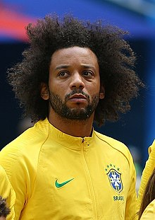

| Marcelo | |||||||||
|  | |||||||||
| Nombre completo | Marcelo Vieira da Silva Júnior | ||||||||
| Nacimiento y Edad | 12 de Mayo de 1988, 35 años | ||||||||
| Altura y Peso | 1,74m y 75kg | ||||||||
| Club Actual | Fluminense F.C | ||||||||
| Posición | Lateral | ||||||||
| Seleción Nacional | Brasil | ||||||||
| Trayectoria | |||||||||
| Fluminense F.C (2005-06) | |||||||||
| Real Madrid (2006-22) | |||||||||
| Olympiakos F.C (2022-23) | |||||||||
| Fluminense F.C (2023-act.) | |||||||||